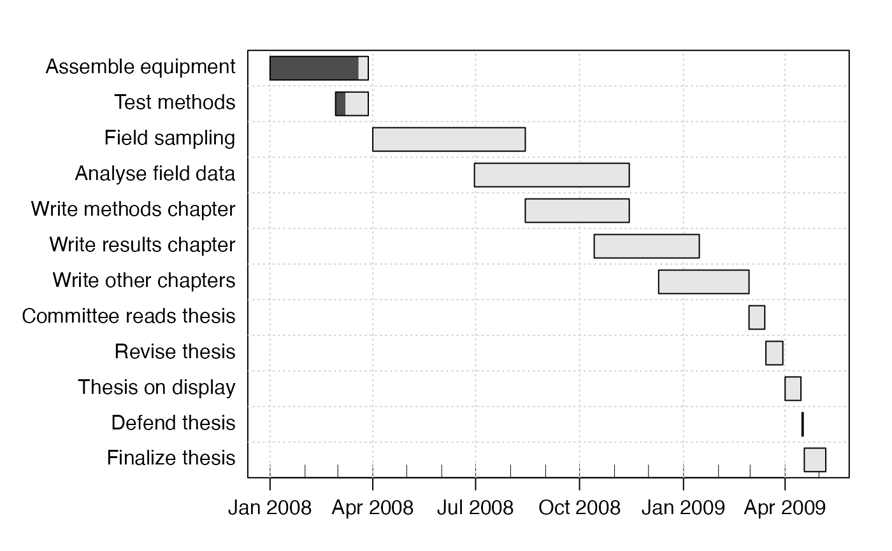
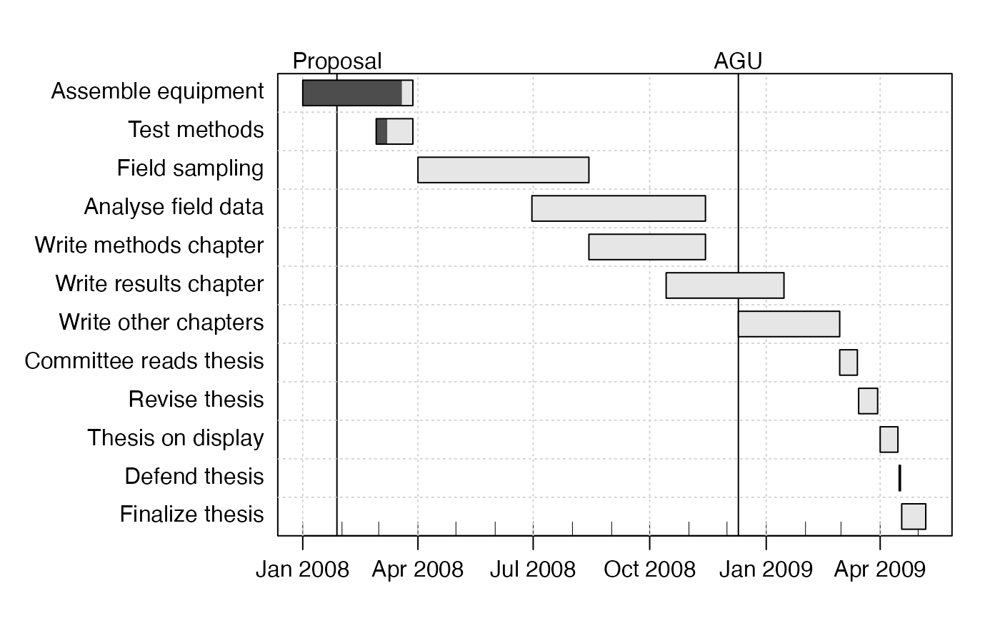
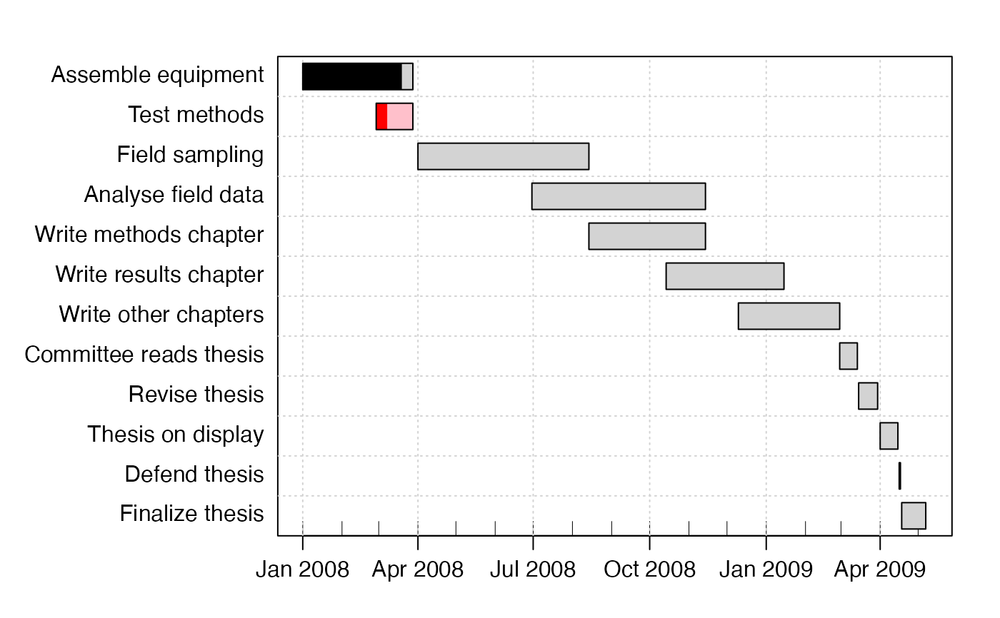
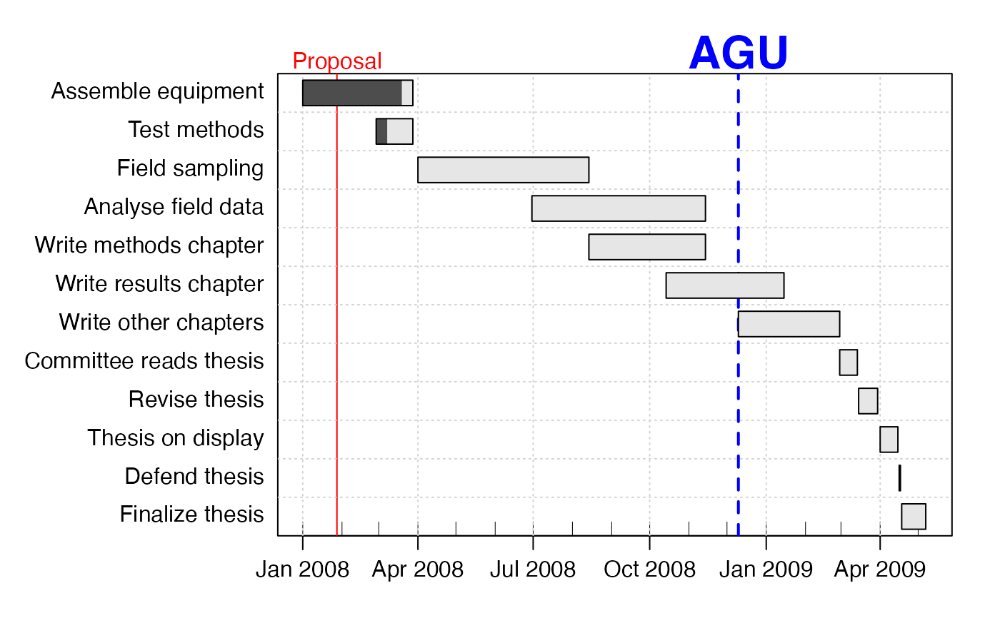
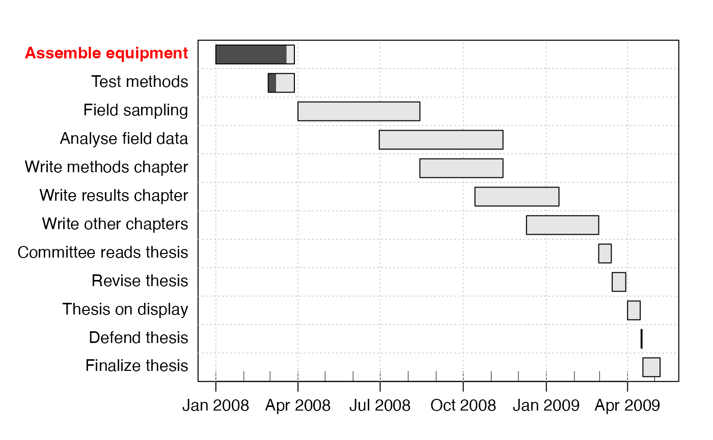
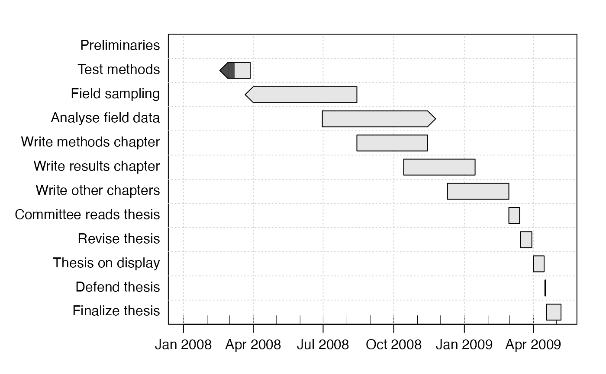

Plot a gantt chart that shows the time allocated to a set of tasks, optionally also with an indication of discrete events that occur as instants in time.
# S4 method for gantt
plot(
x,
xlim,
time.format = NULL,
time.labels.by,
time.lines.by,
event.time = NULL,
event.label = NULL,
event.side = 3,
col.connector = "black",
col.done = gray(0.3),
col.notdone = gray(0.9),
col.eventLine = gray(0.1),
col.event = par("fg"),
cex.event = par("cex"),
font.event = par("font"),
lty.eventLine = par("lty"),
lwd.eventLine = par("lwd"),
bg = par("bg"),
grid.col = "lightgray",
grid.lty = "dotted",
ylabels = list(col = 1, cex = 1, font = 1, justification = 1),
arrows = NULL,
main = "",
line.main = NA,
cex.main = par("cex"),
mgp = c(2, 0.7, 0),
maiAdd = rep(0, 4),
axes = TRUE,
debug = FALSE,
...
)A gantt object.
optional range of time axis; if not provided, the range of times
in x will be used.
format for dates on time axis; defaults to 3-letter month.
suggested label increment on time axis, e.g.
time.labels.by="2 months" to get a two-month interval. If not
supplied, the axis will be generated automatically.
suggested interval between vertical grid lines on the
plot, e.g. time.lines.by="1 week" for weekly. If not supplied, the
grid will be generated automatically.
vector of event times, e.g. conferences, whose time cannot be altered.
vector of character strings holding event names.
side for event labels.
colour of (optional) connectors between items.
colour of work that has been done already. This may be a vector of colours, one for each item in the gantt table.
colour of work that has not been done yet. This may be a vector of colours, one for each item in the gantt table.
colour of event lines; may be a vector.
colour of event labels; may be a vector.
expansion factor for event labels; may be a vector.
font for event labels; may be a vector.
line type for event lines; may be a vector.
line width for event lines; may be a vector.
background colour for plot.
colour for grid.
line type for grid.
A list with elements col for colour,
cex for character-expansion factor, font for font, and justification
for the placement in the margin (0 means left-justified, and 1
means right-justified. (NOTE: left-justification works poorly in RStudio, but
properly in other systems.)
It usually makes sense for the elements in ylabels to be vectors of the same
length as the topic list. However, shorter vectors are permitted, and they lengthened by
copying the default values at the end (see Example 6).
A vector of strings, one for each topic, indicating the nature of
the arrows that may be drawn at the ends of task bars. The individual values
may be "left", "right", "both" or "neither".
Set arrows=NULL, the default, to avoid such arrows.
character string to be used as chart title.
line where title occurs. If NA, then the
title is placed in a default location; otherwise, it is line.main
lines above the top of the plot.
numeric, font-size factor for title.
setting for par(mgp), within-axis spacing. The
default value tightens axis spacing.
inches to add to the auto-computed margins at the bottom, left, top, and right margins. The values may be negative (to tighten margins) but the sum will be truncated to remain positive.
logical, TRUE to draw the x axis. (Setting to
FALSE permits detailed axis tweaking.)
logical value, TRUE to monitor the work.
extra things handed down.
Time is indicated along the x axis, and tasks are stacked along the y axis, akin to progress bars. Colour-coding can be used to indicate the degree of completion of each task. These codes can be set individually for individual tasks. Progress bars can have arrows (on either end), suggesting tasks with flexible start/end dates or overdue tasks. Vertical lines may be drawn for discreet events. See “Examples” for a few of the possibilities.
Gantt diagrams are described on wikipedia
https://en.wikipedia.org/wiki/Gantt_Chart.
Other things related to gantt data:
as.gantt(),
gantt-class,
ganttAddTask(),
gantt,
read.gantt(),
summary,gantt-method
library(plan)
data(gantt)
summary(gantt)
#> Key, Description, Start, End, Done, NeededBy
#> 1, Assemble equipment, 2008-01-01, 2008-03-28, 90
#> 2, Test methods, 2008-02-28, 2008-03-28, 30
#> 3, Field sampling, 2008-04-01, 2008-08-14, 0
#> 4, Analyse field data, 2008-06-30, 2008-11-14, 0
#> 5, Write methods chapter, 2008-08-14, 2008-11-14, 0
#> 6, Write results chapter, 2008-10-14, 2009-01-15, 0
#> 7, Write other chapters, 2008-12-10, 2009-02-28, 0
#> 8, Committee reads thesis, 2009-02-28, 2009-03-14, 0
#> 9, Revise thesis, 2009-03-15, 2009-03-30, 0
#> 10, Thesis on display, 2009-04-01, 2009-04-15, 0
#> 11, Defend thesis, 2009-04-16, 2009-04-17, 0
#> 12, Finalize thesis, 2009-04-18, 2009-05-07, 0
# 1. Simple plot
plot(gantt)

# 2. Plot with two events
event.label <- c("Proposal", "AGU")
event.time <- c("2008-01-28", "2008-12-10")
plot(gantt, event.label=event.label,event.time=event.time)

# 3. Control x axis (months, say)
plot(gantt,labels=paste("M",1:6,sep=""))
# 4. Control task colours
plot(gantt,
col.done=c("black", "red", rep("black", 10)),
col.notdone=c("lightgray", "pink", rep("lightgray", 10)))

# 5. Control event colours (garish, to illustrate)
plot(gantt, event.time=event.time, event.label=event.label,
lwd.eventLine=1:2, lty.eventLine=1:2,
col.eventLine=c("pink", "lightblue"),
col.event=c("red", "blue"), font.event=1:2, cex.event=1:2)

# 6. Top task is in bold font and red colour
plot(gantt,ylabels=list(col="red",font=2))

# 7. Demonstrate zero-time item (which becomes a heading)
gantt[["description"]][1] <- "Preliminaries"
gantt[["end"]][1] <- gantt[["start"]][1]
plot(gantt, ylabel=list(font=2, justification=0))
# 8. Arrows at task ends
plot(gantt, arrows=c("right","left","left","right"))
